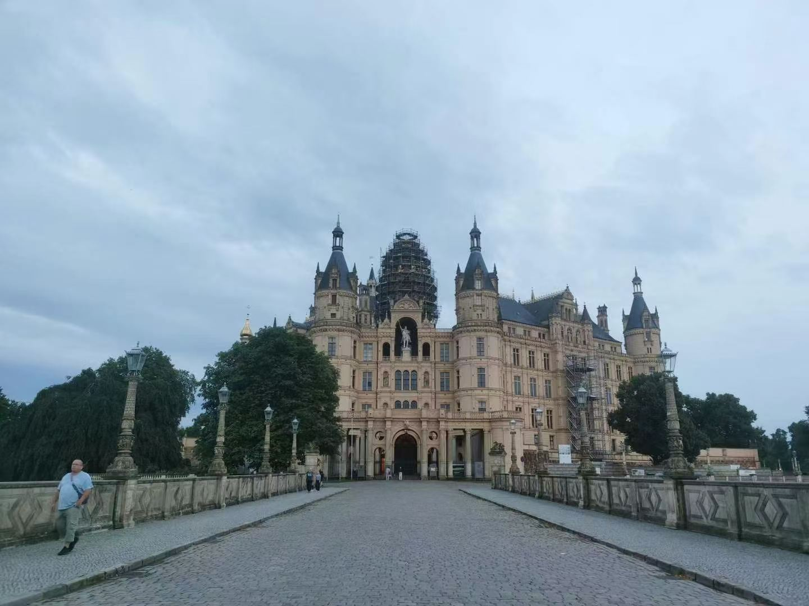
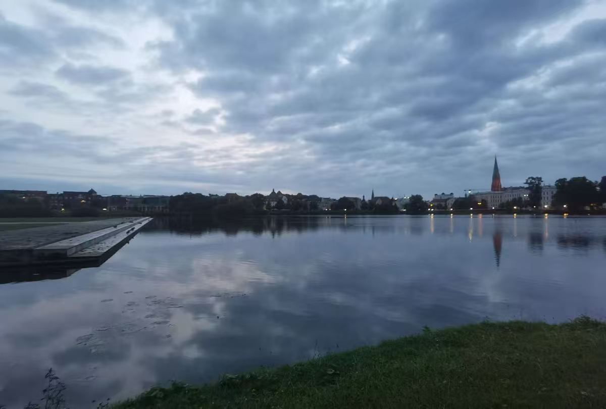
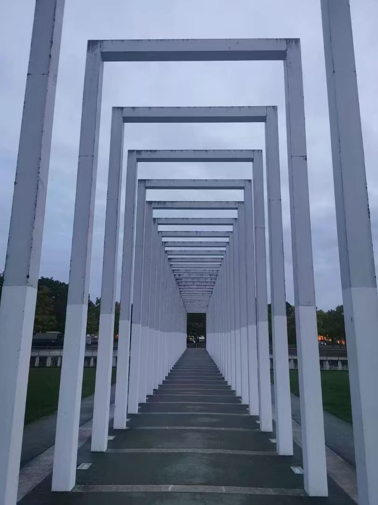
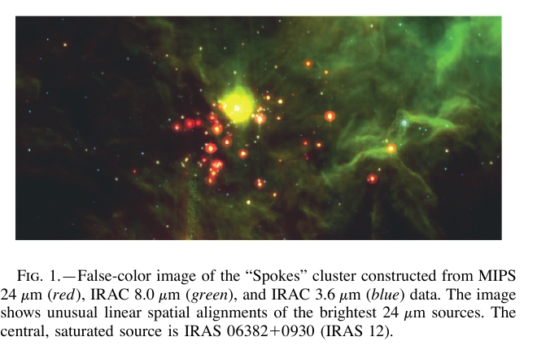

世界不是寂寞无声
一首想分享的歌
光年之外
G.E.M. 邓紫棋
试听默认关闭；点击开关，听一小段这首歌。
30 秒试听由 iTunes 提供 · provided courtesy of iTunes.
见过最治愈的海边
在哥德堡（Gothenburg）南部群岛的 Vrångö 岛。
带着泳包去旅行
我喜欢游泳，四种泳姿都练过一些。时间宽裕时，基本每天都会去游泳。旅行时，也习惯随身带着游泳包。
我的一个小计划，是慢慢“集卡”每座城市的专业游泳馆。
慢车路过 Schwerin
如果你在北德闲逛，建议坐慢车路过最美的中转站——Schwerin。



星空里的另一组射线

图中的亮点仿佛沿着几条射线聚集，让我想起研究中的临界射线，也想起这个主页上散落的小点。
相似的图形，是否也有可以交流的数学语言？先把这次视觉上的相遇留在这里，作为一个疑问，慢慢寻找答案。